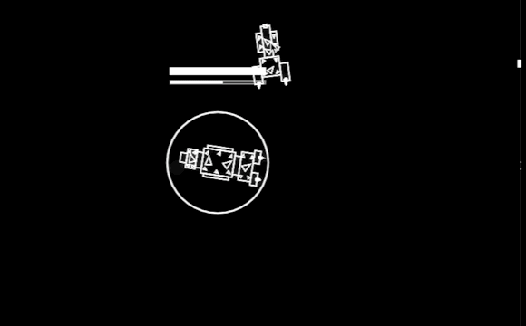
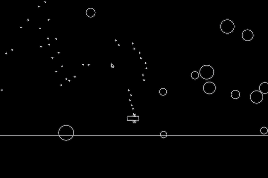
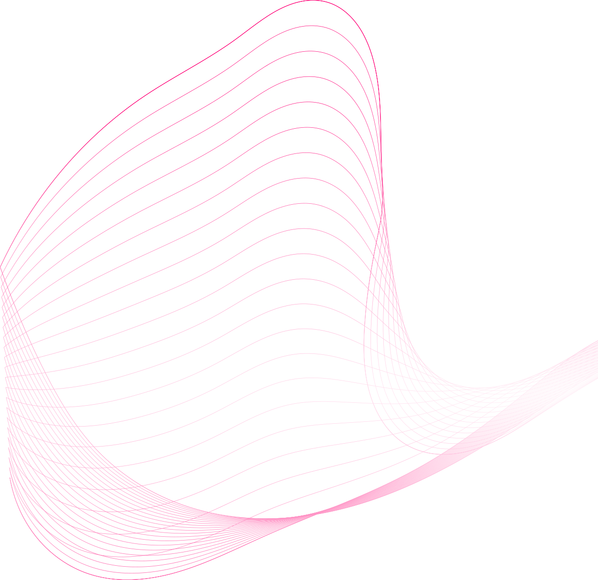

Hi, I'm Kevin. Nice to meet you.
Who I Am:
Student at the National University of Singapore, pursuing studies in Data Science and Analytics.
I enjoy cycling and many sports and games, and also consider myself an art hobbyist who enjoys experimenting with various forms of digital art.
Skills
Programming
- Python, with some experience with libraries such as Tensorflow and Keras.
- C# and HLSL, from working with the Unity Game Engine.
Web Development
- HTML5, CSS, Bootstrap, jQuery, Javascript.
- I also have some experience using the Django web framework, as well as some js libraries such as ml5js and p5js.
Graphic Design
- Photo editing and graphic design using programs such as Adobe Photoshop and GIMP.
Projects
These are some of the projects I have done in my free time through the years.
N Body Simulation in Unity
After getting acquainted with the Unity Engine during my internship in DSTA, I went on to learn more about Unity's compute shaders. I ended up using compute shaders in a personal project, an N Body Simulation made in Unity, to speed up all the calculations for the thousands of particles in the simulation, such that it is still able to run smoothly in realtime.

2D Spaceship Combat Game
I consider this to be the most complex game I have made using LÖVE 2D. This is a spaceship combat game which includes different types of ships and weapons, and has complex mechanics such as weapon penetration based on projectile angles, fires, and ship armour and shields.

Asteroid Shooter Game
I started off my journey into the world of programming with an interest in game development. This simple game based on Asteroids was made using the LÖVE 2D game engine, and was one of the first few games I made. Many of my first games were made either using this framework or using the canvas element.

